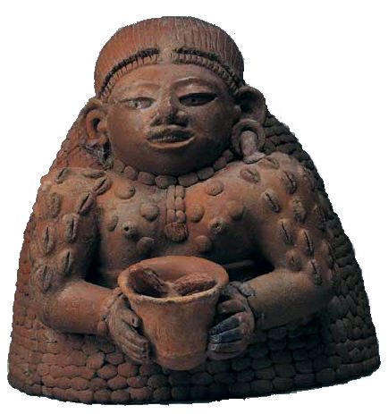
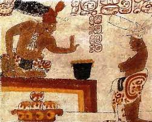
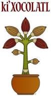

époque maya
Les Mayas cultivent des cacaoyers et utilisaient les fèves de cacao pour fabriquer une boisson chaude, mousseuse et amère18, souvent aromatisée avec de la vanille, du piment et du roucou nommée xocoatl. Une tombe maya du début de la période classique (460-480 av. J.-C.), retrouvée sur le site de Rio Azul (au Guatemala), contenait des récipients sur lesquels est représenté le caractère maya symbolisant le cacao et comportant des restes de boisson chocolatée.
Une poterie contenant des traces de cacao fut découverte au Belize, ce qui confirme l'existence d'une consommation de chocolat au vie siècle. Des documents rédigés en caractères Maya attestent que le chocolat est utilisé aussi bien pour des cérémonies que pour la vie quotidienne.
époque aztèque
Les Aztèques associent le chocolat avec Xochiquetzal, la déesse de la fertilité. Ils pensent que le Xocoatl permet de lutter contre la fatigue et cette croyance découle probablement de la teneur en théobromine du produit. Le roi et les notables accompagnent leur viande de mole poblano, première recette salée associant le cacao comme épice, et consomment à la fin des repas ce xocoatl en tant que boisson froide. D'autres boissons et préparations chocolatées l'associent avec des aliments tels que le gruau de maïs (qui joue le rôle d'émulsifiant), ainsi le peuple épice son atole avec des fèves de cacao pour consommer une sorte de purée, le champurrado, ou l'iztac ātōlli à base de jus d'agave fermenté. Durant plusieurs siècles, en Europe et en Amérique du Sud, on utilise les fèves de cacao pour soigner la diarrhée. Tous les territoires conquis par les Aztèques où poussent des cacaoyers doivent leur verser les fèves de cacao comme taxe, ou, comme les Aztèques eux-mêmes le considéraient, comme un tribut.
Le chocolat traverse l'océan
Originaire d'Amérique, le cacaoyer est donc inconnu ailleurs dans le monde jusqu'au xvie siècle. En 1494, Christophe Colomb jette par-dessus bord les fèves qu'il avait reçues des Amérindiens. Il les aurait prises pour des crottes de chèvre. C'est donc plus tard, en juillet 1502 sur l'île de Guanaja, qu'il découvre pour la première fois la boisson chocolatée. Les colons espagnols n'apprécient cette boisson amère aux épices piquantes que lorsque les religieuses d’Oaxaca l'édulcorent et l'aromatisent avec du miel, du sucre de canne, du musc et de l’eau de fleur d'oranger.Ce n'est qu'à partir de la conquête des Aztèques par les Espagnols que le chocolat est importé en Europe où il devient rapidement très prisé à la cour d'Espagne. Dès le xviie siècle, le chocolat devient une ressource très appréciée de l'aristocratie et du clergé espagnol. Son commerce s'étend alors aux autres colonies espagnoles comme les Pays-Bas espagnols.L'arrivée du chocolat en France a commencé avec l'exil des juifs séfarades ou marranes d'Espagne en 1492 puis du Portugal vers 1536, fuyant l'Inquisition et venus se réfugier dans l'Hexagone en transportant le chocolat dans leurs valises. De nombreux marranes s'installent notamment dans le quartier Saint-Esprit de Bayonne après 1609, ces premiers entrepreneurs du chocolat au Pays basque sont à l'origine de l'introduction du chocolat en France.La première expédition commerciale pour l'Europe (entre Veracruz et Séville) daterait de 1585. Le chocolat est alors toujours servi comme boisson, mais les Européens ajoutent du sucre et du lait pour neutraliser l'amertume naturelle ; ils remplacent le piment par de la vanille.
Pour faire face à la forte demande pour cette nouvelle boisson, les armées espagnoles commencent à réduire en esclavage les Mésoaméricains pour produire le cacao, une activité économique à part entière se développe. Cependant ce produit d'importation reste très cher, seuls les membres de la famille royale et les initiés peuvent en boire.En parallèle, dans le nouveau monde, la consommation de cacao est très répandue chez les missionnaires et conquistadores. Deux développements permettent de réduire encore le prix : la généralisation de la culture dans les colonies de la canne à sucre et l'utilisation de main-d'œuvre africaine dans ces exploitations. À la même époque, la situation est différente en Angleterre où n'importe qui, avec suffisamment d'argent, peut en acheter. À Londres, la première chocolaterie ouvre en 1657. En 1689, l'éminent médecin et collectionneur Hans Sloane développe une boisson lactée au chocolat en Jamaïque qui est dans un premier temps utilisée par les apothicaires, mais vendue plus tard aux frères Cadbury.La boisson reçoit un encouragement officiel en France par les reines françaises, infantes d'Espagne, Anne d'Autriche et Marie-Thérèse d'Autriche ou par les médecins qui après avoir jugé la boisson néfaste, en vantent les bienfaits. La France découvre en 1615 le chocolat à Bayonne à l'occasion du mariage d'Anne d'Autriche, fille du roi d'Espagne Philippe III avec le roi de France Louis XIII. Mais c'est Louis XIV et son épouse Marie-Thérèse d'Autriche qui font entrer le chocolat dans les habitudes de la cour du château de Versailles, la reine se faisant préparer par ses servantes le chocolat « à l'espagnol ».
le chocolat depuis 1780
Une usine de fabrication de chocolat est ouverte aux États-Unis en 1780, par un apothicaire nommé James Baker26. La première fabrique suisse de chocolat est créée par François-Louis Cailler en 1819. Il est suivi six ans plus tard par Philippe Suchard , puis par Charles-Amédée Kohler en 1830. La première fabrique de France est fondée par le chocolatier Jules Pares, en 1814, près de Perpignan (dans les Pyrénées-Orientales). En 1815, le Hollandais Coenraad Johannes van Houten crée une première usine. De nouvelles manufactures apparaissent aussi en Angleterre. C'est par exemple le cas de Cadbury en 1824.
À l'origine, les fabricants de chocolat sont spécialisés dans la fabrication de la pâte de chocolat. Ils vont peu à peu diversifier leurs productions avec les confiseries et les gâteaux. La mécanisation ainsi que la concurrence des producteurs de chocolats vont entraîner une baisse continue du prix du chocolat. En 1821, l’Anglais Cadbury produit le premier chocolat noir à croquer. Pour répondre aux besoins de l'industrie, les cacaoyers sont introduits en Afrique et les premières plantations créées.
En 1828, Coenraad Johannes van Houten réalise la première poudre de cacao. Grâce à une presse hydraulique de son invention, il réussit à durcir le beurre de cacao sous forme de pain qui peut ensuite être réduit en poudre. Van Houten est le premier à inventer un procédé pour séparer le cacao maigre (ou tourteau) et le beurre de cacao, permettant aux industriels de doser les quantités relatives de cacao maigre et de beurre de cacao dans la pâte de cacao. Le chocolat entre alors dans l'âge industriel. La mécanisation entraîne une baisse des prix, ce qui permet de conquérir un public plus large. Van Houten, à partir de sa fabrique de chocolat d'Amsterdam, vendra ses boîtes de chocolat en poudre dans toute l'Europe.L'année 1830 voit l'apparition du chocolat aux noisettes inventé par Kohler.
Antoine Brutus Menier crée en 1836 en France le concept de la tablette de chocolat, plaquette composée de six barres semi-cylindriques enveloppées du célèbre papier jaune Menier.Joseph, Richard et Francis Fry, qui dirigent la maison Fry & Sons depuis la mort de leur père (en 1835), découvrent en 1847 qu'un mélange « sucre, beurre de cacao, chocolat en poudre » permet d'obtenir une pâte molle que l'on peut verser dans des moules. Cette invention permet de consommer le chocolat d'une nouvelle manière, en plaque, telle que nous la connaissons aujourd'hui. Ce produit est officiellement présenté lors d'une exposition à Birmingham en 1849 sous le nom de « Chocolat délicieux à manger », en français dans le texte.
Plusieurs innovations (notamment en Suisse) vont bouleverser l'industrie du chocolat. En 1876, Daniel Peter crée dans sa fabrique de Vevey (Suisse) le premier chocolat au lait en utilisant du lait en poudre. En 1879, Daniel Peter s'associe avec Henri Nestlé (l'inventeur du lait concentré) pour fonder la firme Nestlé. Le Suisse Jean Tobler lance la barre triangulaire Toblerone en 1899. Philippe Suchard se met à commercialiser la tablette Milka. Au début des années 1900 apparaissent les premières barres chocolatées : le hollandais Kwatta invente les premières barres de chocolat de 30 grammes. L'américain Mars lance le Milky Way et le hollandais Nuts, sa barre aux noisettes éponyme. Dernière grande innovation de l'industrie, le chocolat blanc est produit pour la première fois en Suisse dans les années 1930 par Nestlé, dans le but d'utiliser les surplus de beurre de cacao. La société ne précise pas qui est à la source de cette invention exactement. La domination de l'industrie chocolatière suisse, à la pointe de la technologie et du marketing, ne durera que la première moitié du xxe siècle jusqu'à l'arrivée des entreprises américaines Hershey's et Mars.